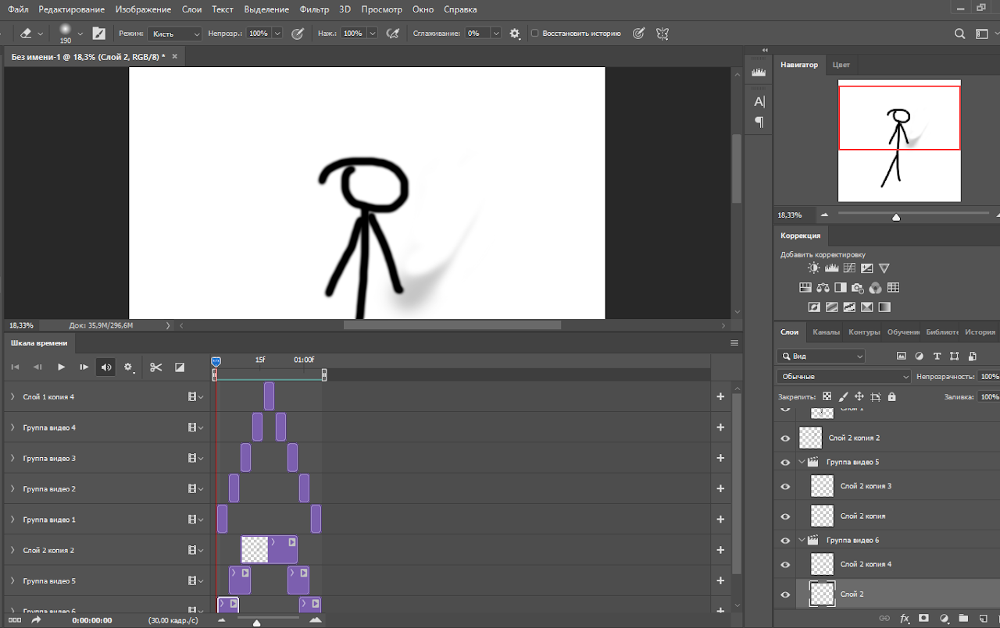
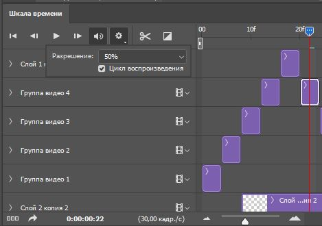

По окончанию подготовки, можно приступать к анимации.
В окне timeline можно располагать слои на определенных промежутках времени, редактировать их и их отображение.
Также, во время работы, можно проигрывать вашу анимацию. Для удобства советую зациклить воспроизведение.
|  |  |